在开发或者调试过程中，经常需要在多个窗口间来回切换查看信息，在操作上不仅麻烦，而且经常打开错误的窗口。所以我们希望能够在有限的屏幕里平铺多个窗口，这就需要能够分割屏幕的软件，而这类软件非常少，并且体验很不好。在尝试多款分屏软件后，我发现了一款叫MaxTo的软件能很好的解决我的问题，不过这款软件只能免费使用30天，而且价格还很贵。
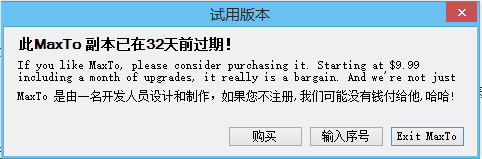
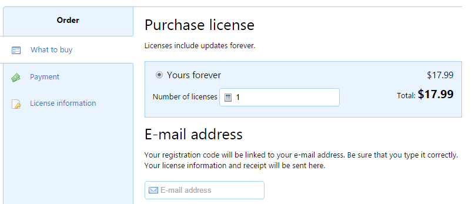
不过后来我发现这款软件是用C#写的，看来是款好捏的软柿子，所以我试着来破解它。
打开注册窗口，我们会发现不管怎么输入邮箱和序列号，注册按钮都无法点击，看来软件会检测邮箱和序列号的逻辑关系。
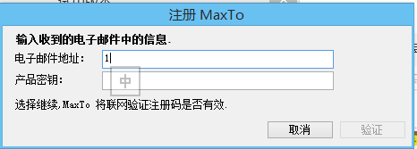
用Reflector打开软件，找到注册窗口的代码。
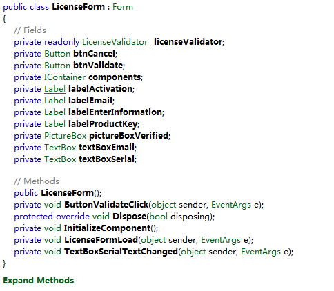
要能够触发ButtonValidateClick()函数，我们必须突破灰色按钮，检测邮箱和序列号关系的代码在TextBoxSerialTextChanged()函数里，可以看到这里调用了一个check函数来验证邮箱和序列号，跟进去可以看到验证算法。
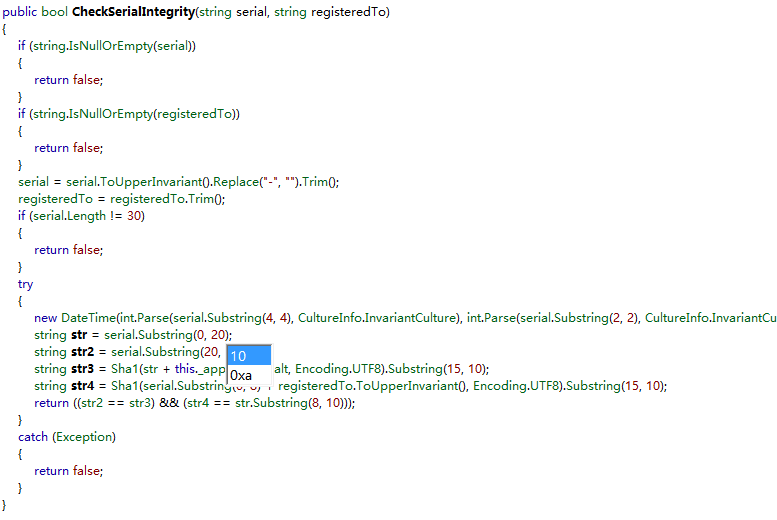
不过这里我不想去分析算法，可以看到函数前面会验证邮箱和序列号是否为空，所以在这里我们可以直接返回true。
用Reflexil修改IL代码，关于IL指令可以在这里查找。
http://www.cnblogs.com/flyingbirds123/archive/2011/01/29/1947626.html
将下面的idc.i4.0改为idc.i4.1，然后保存即可。
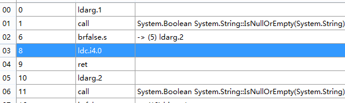
再次打开我们就可以看到灰色按钮可以点击了，但是提示无法连接服务器，猜测还有一个网络验证的过程。
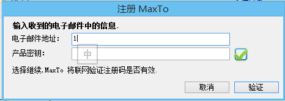
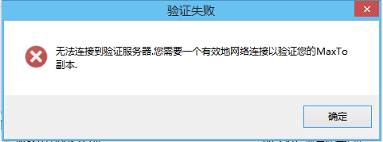
打开ButtonValidateClick()函数可以看到，软件会将序列号和邮箱发送给this._licenseValidator.Validate()函数，然后验证returncode来判断注册信息。当返回200时即注册成功，当发生异常时则会提示无法连接服务器。
那么关键的地方就是让程序的流程执行到case 200处，开始我尝试在异常捕获处直接修改程序流程，但是这样会引起堆栈不平衡，所以我们可以跟进Validate()函数，尝试修改网络返回的数据。
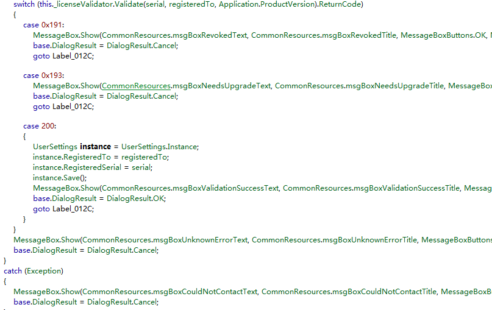
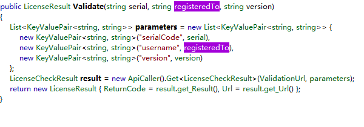
可以看到程序会将注册信息以GET的方式提交到一个URI，然后将返回的数据保存在一个LicenseResult的对象中，那么这个URI到底是什么呢，这里不知道是不是Reflector的BUG，只能看到这个URI的定义，但是我用另一个反编译软件ILSpy看时，就能看到URI。
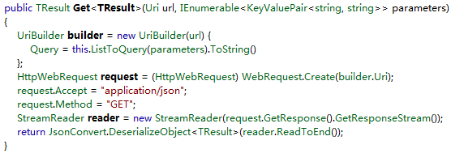
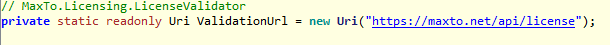
不过这里是https加密的，所以看到直接修改返回的数据是不行的，我们可以暴力一点修改Validate()函数的返回值。要修改返回数据，要先弄清LicenseResult这个对象。
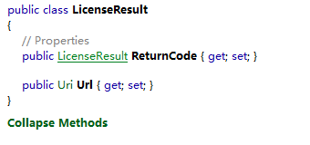
前面我们已经知道只要将returncode的值修改为200就可以注册成功，所以我们要把其他的语句去掉，注意要保持堆栈平衡。修改完成后是这样的。
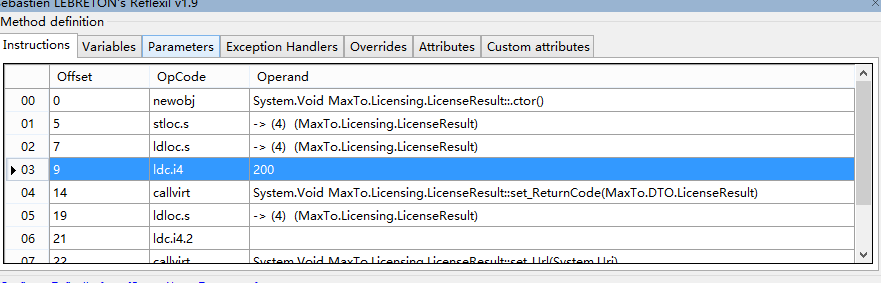
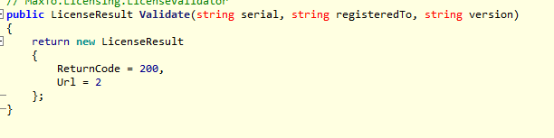
保存运行一下，输入任意信息，可以看到已经破解成功。
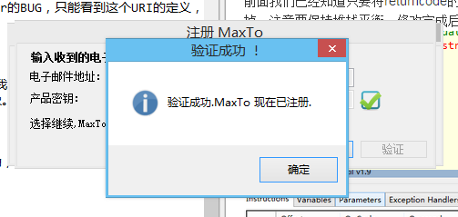
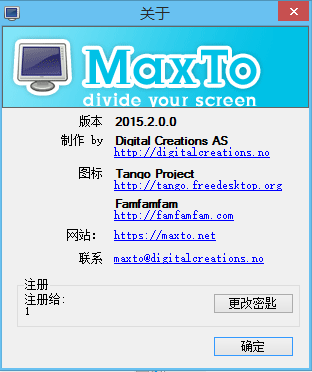